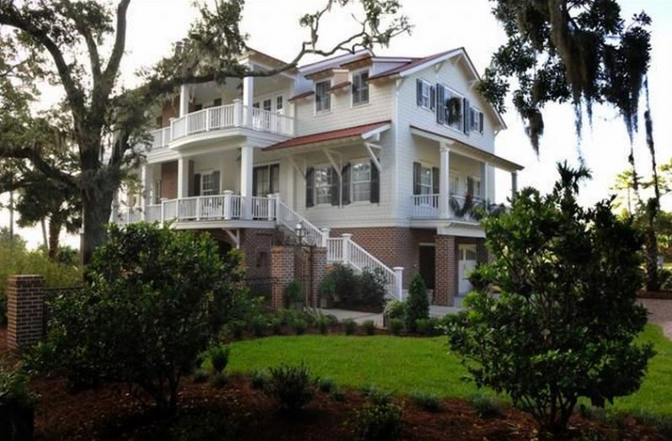
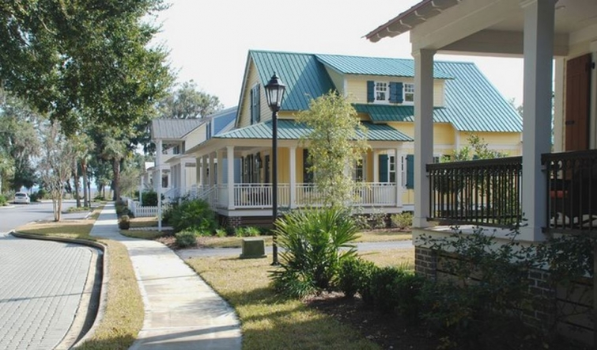

.png)
.PNG)
.PNG)
.PNG)
.PNG)
.PNG)
.JPG)
.JPG)
.PNG)
.PNG)


source
It has stormed and stormed and stormed here today…and more storms are on the way. My parents have lost power, but as of now our house is still electrified. I better get this post done fast in case it does go out…and perhaps we should make a pot of coffee just in case (always a requirement in an emergency, right? 🙂 ) So let’s get right to it…lots of houses for you to explore this weekend, along with a little food and some book news …. oh and the winner of the giveaway!
houzz.com
You might not remember that first house at the very top of the post, but it was Coastal Living Magazine’s Holiday Coastal Cottage way back in 2008. It is located in a community called Yellow Bluff (shown above) in the coastal region of Georgia. Barnard Architects designed the home, and you can see more photos of it here. What I really wanted you to know is that the house is for sale. You can find out all the realtor details here. 🙂
While Barnard Architects have designed some beautiful homes, I’ve told you all before that my favorite architectural firm is Historical Concepts. I was browsing their site the other day and saw this Jupiter Island Club, Florida home. (It’s not for sale.)
I had seen the exterior before on another site, but they have now included a few interior photos along with some before and after shots. (The change is amazing!) You can see it all here.
If you enjoy reading about old plantation homes, you should check out Greenwood in Thomasville, Georgia, also on Historical Concepts’ site. 
The 5000 acre estate has had many important guests over the years – including President Dwight Eisenhower and Jacqueline Kennedy (who visited there after the death of her husband.) This amazing property is for sale. You can watch a video with information about it here, and the realtor’s site with more details is here.
Another Atlanta area architect who does gorgeous work is Norman Askins. Here are a couple of rooms from a mountain home he designed.
Don’t those spaces look so peaceful and relaxing? Check out his portfolio of beautiful work here.
Now here’s a house that is just plain pretty.
(Click on the link to see more of it.)
And if you like color, you will like browsing Anthony Baratta’s site. You can even shop there! (It takes his site a while to load on my computer, so if it does on yours, just be patient. 🙂 )
But if you would like something a little more…um…subdued, then you will enjoy seeing some kitchens by Huestis Tucker.
Back in January, we talked about the Downton Abbey costume display that was to be at the Biltmore. Well Paula from Town and Country House actually went to see it! You can read about her trip here. 🙂
There’s a teeny-tiny excerpt from Jan Karon’s new book on her Facebook page.
You can read it here.
Come Rain or Come Shine (A Mitford Novel)
Last year around this time, I was all into strawberries and decorating with red and green. It seems I have major strawberry cravings again this year, and this strawberry shortcake cheesecake is calling my name!
Yummmmmmm.
And finally, let me just say thank you thank you thank you for ALL the super sweet comments you left on the birthday party post (and the other ones too.) You all are THE best readers out in blogland by far!!
And who was the winner of the books and gift card?
It was number…
and that comment belonged to…
Congratulations Leslie Anne! I will get in touch with you soon so that your gifts can get in the mail to you. 🙂
I hope all of you enjoy the rest of your weekend, and if you are in the path of some of these severe storms I hope you stay safe and dry.
Until next time..


.PNG)
Hi Kelly,
I love these homes. Norman Askins has been a favorite for some time.
That strawberry cheesecake shortcake looks dangerous. Just hand me a fork and a comfy place to sit while I savor each bite!
Hope your storms are long gone. We’re experiencing summer weather, ugh.
Karen
——————————————————————–
His work is just fabulous. I am with you on that shortcake looking dangerous! Summer weather this early? Guess that is what the weather is like in California. 🙂
Kelly
SQUEEL – SQUEEL!!! I never win anything! How fabulous to have this good news on an otherwise dreary, rainy day! Thank you so much, you fun little blogger, you!
———————————————————————–
Yay! I’m so glad you saw the post! I was hoping it would surprise you. Congratulations! I hope you will enjoy your prizes Leslie Anne.
Kelly
Hi Kelly
I loved the browse and visited some of the sites. Congrats to Leslie Anne; I’m sure you’ll enjoy the gifts.
———————————————————————
Glad you enjoyed them!
Kelly
Lovely homes! The photo of the kitchen by Huestis Tucker kicked my OCD-ness up a notch. (This is why my spousal unit always refers to me as O-C-Dee.) I want to move that round table over a few inches so it centers the light.:)
———————————————————————-
O-C-Dee …too funny! Yes, I know what you mean about centering the table under the light. I want to move our LIGHT so that it is centered in front of our French doors. I am right there with you!
Kelly
Ooh. I’m rather smitten with Sunstruck Cottage (i.e. the first one), now if only I had a spare $2.9m…
I’ve also saved the recipe for that lush looking cheesecake. Definitely one to try!
Hope you survive(d) the storms OK
——————————————————————–
It’s a pretty impressive house; isn’t it? And oh my at the cheesecake! Just give a fork, and I could do some damage on it.
We survived the storms…just a little mess to clean up in the yard.
Kelly
Beautiful homes…luscious cheesecake! 😉
——————————————————————
Not a bad combination, right? 🙂
Kelly
Oh my! I am going to have to have some serious chair time to enjoy all the kitchens at Huestis Tucker Architects and all the deliciousness at Anthony Barratta. You had me at blue cushions with little blue tassels! Hope you got the coffee made and hope your storms weren’t too severe.
———————————————————————
Hope you had time to explore the eye candy sites Peggy. 🙂 We DID get the coffee made, and the storms moved on through quickly.
Kelly
Great post as usual.
You and Jan Karon are teasing me, gotta wait until Setp 22 for this book. Summer better go quickly. Loved the gardening items in your jars. I think you could write a book on filling those jars, girlfriend. Just received my black/mat picture frames you use. I am likin’ them too.
Thanks for sharing!
———————————————————————-
Waiting for that book is hard; isn’t it Nan?!! Hope you are having great success with framing and hanging your photographs. 🙂
Kelly
Congratulations to Leslie Anne on the win!
WOW! Those storms were intense last night, thankfully, we didn’t lose power. As for the houses, I can’t choose which one I like the best. They’re all so different, yet all so beautiful. The mountain setting is to die for, but I love those old, live oaks too. I’m in strawberry mode also, I made some Grand Marnier strawberry jam yesterday when it was pouring down rain. Have a wonderful week! Are you counting down the days?
—————————————————————–
Your jam sounds delicious Teresa, and what a wonderful way to spend a rainy day. I am most definitely counting down the days…19 to go. 🙂
Kelly
Great browsing fodder as usual! I am pinning that cheesecake! 🙂
——————————————————————-
I am happy you enjoyed it! And thank you for pinning. Hope you get to make that cheesecake some time soon!
Kelly
I love that 2nd house on your blog…so cute. At this stage of our life, small is good.
Did you go to the Biltmore and see the costumes of Downton Abbey? They were beautiful! Had my favorites. I could live in the Library there, that was probably my favorite room along with the small dining area/breakfast room.
Last…I had to print that strawberry cheesecake recipe…the picture was mouth watering and I can’t wait to make it. Hope mine looks as good.
———————————————————————–
I agree with you…small is good. We have not made it to the Biltmore…seems we travel more south lately than north. I hope you enjoy that strawberry cheesecake. It looked sooooo yummy!
Have a good week!
Kelly
These are all so beautiful, but my favorite is the mountain home by Norman Askins, of course. I’m going to have to get to Biltmore to see the Downton Abbey exhibit before it gets gone, especially since I live only twenty minutes away!
———————————————————————-
If I had a mountain home, I would love to have a bunk room like that one. You most definitely should be getting over to the Biltmore. 20 minutes…oh my Carolyn!
Do it next weekend.
Kelly
Kelly, what wonderful features, oh my! What wonderful designers, their work is truly awesome. Love Jan Karon! I’d love to go back to the Biltmore and see The Downton Abby display, I’m sure it’s just incredible. Enjoyed your sweet post on this early Sunday morning!
Have a sweet day!
Nancy
———————————————————————
I’m so happy you found some eye candy here Nancy. 🙂 You should go back to the Biltmore and check out that display. I know it must be a good one – especially for fans of the show.
Have a great week!
Kelly
Loved those houses, especially the one from Historical Concepts.
———————————————————————
I love EVERYTHING that Historical Concepts does!
Kelly
Hi Kelly,
Thanks so much for the shout out! I did love visiting Biltmore and seeing all the amazing costumes from Downton Abbey. And I love this whole Talk of the Weekend post–especially the Anthony Baratta images, the tip about Jan Karon’s new book, and, yes, that strawberry cheesecake! I hope you enjoy the rest of the weekend and have a great week ahead! Paula
———————————————————————–
You are more than welcome Paula! What a fun trip you had! I am so glad you wrote about it so that all of us who cannot go can live vicariously through you. 🙂 We had a very wet weekend, and of course, it gets sunny for the workweek. 🙁 Hoping for more sunshine next weekend!
Kelly